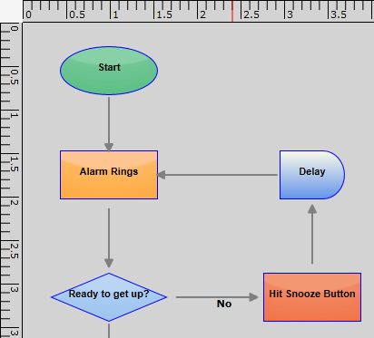

Different fields require different units of measure, and therefore several measurement units are provided such that you can choose the unit that is most comfortable and suitable to use. All basic properties can be defined in the specified measurement unit. It is also possible to dynamically change the units at run-time. The rulers are updated accordingly to represent the coordinates in the currently selected unit.
Use Case Scenarios
Measurement units will be usefull when the user wants to access objects in any of the available units.

Figure 117 : Units changed to Inches
Specification of Units
The measurement units property can be specified in the following ways:
|
[XAML]
<sfdiagram:DiagramControl IsSymbolPaletteEnabled="True" > <sfdiagram:DiagramControl.Model> <sfdiagram:DiagramModel x:Name="diagramModel" > </sfdiagram:DiagramModel> </sfdiagram:DiagramControl.Model> <sfdiagram:DiagramControl.View > <sfdiagram:DiagramView ShowHorizontalGridLine="True" ShowVerticalGridLine="True"> <syncfusion:DiagramView.Page> <syncfusion:DiagramPage x:Name="diagramPage" MeasurementUnits="Inch"/> </syncfusion:DiagramView.Page> </sfdiagram:DiagramView> </sfdiagram:DiagramControl.View> </sfdiagram:DiagramControl> |
|
[C#]
DiagramControl dc = new DiagramControl(); dc.IsSymbolPaletteEnabled = true; DiagramView view = new DiagramView(); (view.Page as DiagramPage).MeasurementUnits = MeasureUnits.Inch; |
|
[VB]
Dim dc As New DiagramControl() dc.IsSymbolPaletteEnabled = True Dim view As New DiagramView() TryCast(view.Page, DiagramPage).MeasurementUnits = MeasureUnits.Inch |
Once the measurement unit is specified, all the values must be specified with respect to that unit. Forexample, if the unit is set to Inch, then the node's properties can be set as follows:
|
[C#]
Node n1 = new Node(Guid.NewGuid(), "Node1"); n1.IsLabelEditable = true; n1.Label = "Alarm Rings"; n1.OffsetX = 1.5; n1.OffsetY = 1.25; n1.Width = 1.5; n1.Height = 0.75; n1.LabelVerticalAlignment = VerticalAlignment.Center; diagramModel.Nodes.Add(n1); |
|
[VB]
Dim n1 As New Node(Guid.NewGuid(), "Node1") n1.IsLabelEditable = True n1.Label = "Alarm Rings" n1.OffsetX = 1.5 n1.OffsetY = 1.25 n1.Width = 1.5 n1.Height = 0.75 n1.LabelVerticalAlignment = VerticalAlignment.Center diagramModel.Nodes.Add(n1) |
You can also dynamically change the units at runtime. The ruler values get changed according to the measurement unit selected. The rulers then indicate the position of the graphical objects with respect to the selected measurement unit.
Figure 118: Units changed to Inches
Tables for Properties, Methods, and Events
Properties
Table 7: Property Table
|
Property |
Description |
Type |
Data Type |
Reference links |
|
MeasurementUnits |
Gets or sets the measurement unit property. |
DependencyProperty |
MeasureUnits.Pixel MeasureUnits.Point MeasureUnits.Document MeasureUnits.Display MeasureUnits.SixteenthInch MeasureUnits.EighthInch MeasureUnits.QuarterInch MeasureUnits.HalfInch MeasureUnits.Inch MeasureUnits.Foot MeasureUnits.Yard MeasureUnits.Mile MeasureUnits.Millimeter MeasureUnits.Centimeter MeasureUnits.Meter MeasureUnits.Kilometer |
no |
Sample Link
The sample for Measurement Units is hosted in the following location:
<sample installation location>\Syncfusion\EssentialStudio\Version Number\ \Silverlight\Syncfusion.Diagram.Silverlight.Samples\Samples\General Features\RulerDemo.xaml